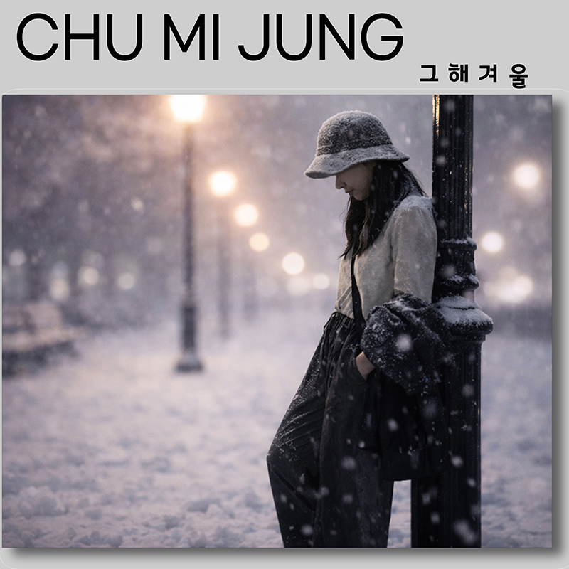
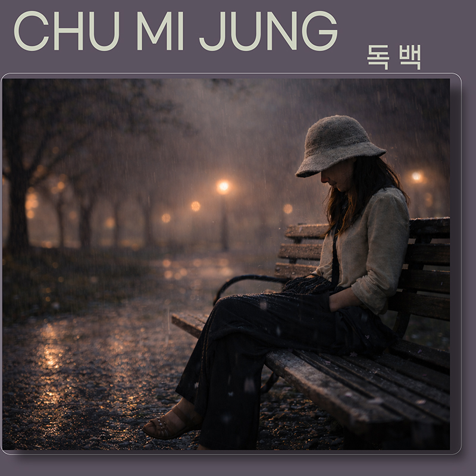
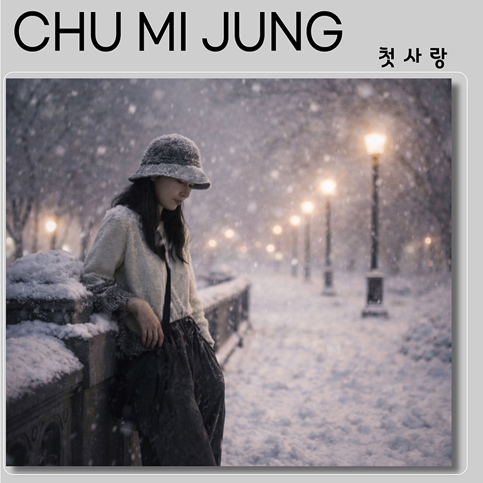

음악과 시, 그리고 감정의 결을 따라 한 줄의 가사와 한 편의 문장이 머무는 공간입니다.

나의 첫번째
싱글 음반〈너의 멜로디〉는
섬세한 감정선을 담은
발라드 곡으로,
일상의 작은 순간에 스며드는
사랑의 기억을 노래한다.
보컬의 깊은 울림과
절제된 편곡이 어우러져
잔잔하지만 오래 남는
여운을 전한다.
발매일 : 2026년 2월 13일
[CREDIT]
Lyrics by 추미정
Composed by 추미정
Vocal by 추미정
Arranged by 김태훈

두번째 디지털 싱글 [독백]은
이별 이후에도 쉽게 놓지 못하는
마음을 담은 감성 발라드이다.
담담하게 흐르는 멜로디 위에
조용히 스며드는 가사는
괜찮다는 말 한마디를 기다리는
마음을 섬세하게 표현한다.
절제된 편곡과 따뜻한 보컬 톤이
어우러져 깊은 여운을 남기는 곡이다.
발매일 : 2026년 3월 6일
[CREDIT]
Lyrics by 추미정
Composed by 추미정
Vocal by 추미정
Arranged by 김태훈

이번 3번째 디지털 싱글 곡은
시인 김승국님의 시를 바탕으로
만들어졌으며,
원작이 지닌 섬세한 감정을
음악으로 풀어냈습니다.
김승국님의 대표시집으로는
[그리움으로 뜨는 별].
익숙했던 체온과 말들 속에
담겨 있던 감정을 따라가며
시간이 흐른 뒤에야
비로소 실감되는
이별의 순간을 담아냈습니다.
계절이 다시 돌아오듯,
잊었다고 생각했던
감정도 다시 스며들고
그날의 떨림과 온기가
조용히 되살아납니다.
문학과 음악이 만난
이 곡은
누군가의 기억 속
첫눈처럼 오래 남는
여운을 전합니다.
발매일 : 2026년 3월 31일
[CREDIT]
Lyrics by 김승국
Composed by 추미정
Arranged by 김태훈
Vocal by 추미정
이 공간에는 제가 써 온 시와, 앞으로 발표할 작품들을 차차 담아갈 예정입니다. 간단한 대표 시 한 편을 먼저 올리고, 이후에는 시집 소개나 연재 형식으로 확장할 수 있습니다.